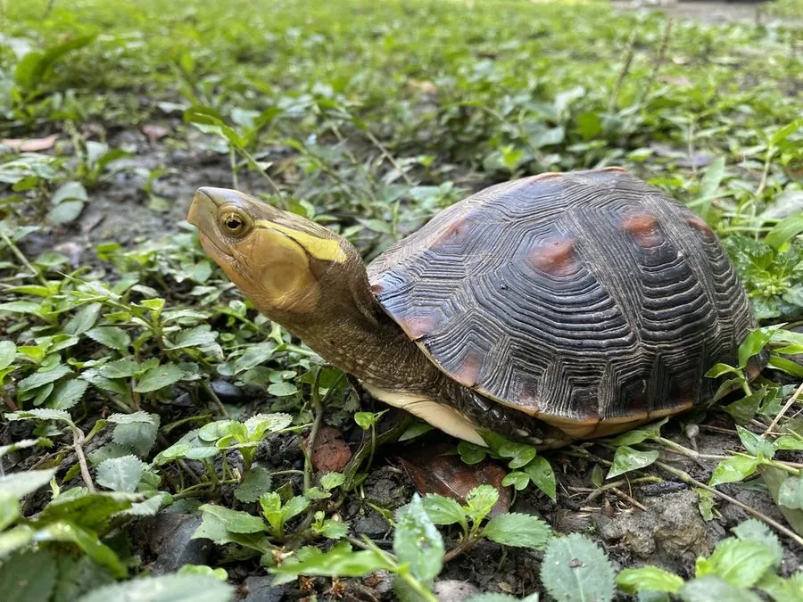

爬行动物 · 动物界
黄缘闭壳龟 Cuora flavomarginata

中国南方与台湾的珍稀闭壳龟，腹甲可闭合如盒，背甲边缘呈黄色，因过度捕捉和栖息地破坏而濒危。
- 分类
- 门脊索动物门纲爬行纲目龟鳖目科地龟科属闭壳龟属
- 栖息环境
- 山区林下的落叶层、溪流边、灌丛与农耕地附近
- 地理分布
- 中国安徽、浙江、福建、台湾等地及日本琉球群岛
- 保护级别
- IUCN 濒危（EN）；中国国家二级保护动物；CITES 附录 II
物种志
黄缘闭壳龟背甲长 15–20 厘米，背甲高隆，呈红褐或棕褐色，中央有一条明显的脊棱，背甲边缘和腹甲边缘呈鲜亮的黄色，“黄缘”之名由此而来；腹甲分为前后两半，可通过韧带活动闭合，把头尾和四肢完全藏在壳内，像一只密闭的盒子。
它分布于中国安徽、浙江、福建、台湾等地以及日本琉球群岛，栖息于山区林下的落叶层、溪流边和灌丛中，多在清晨和傍晚活动，杂食性，取食蚯蚓、蜗牛、昆虫和果实。每年 5–7 月繁殖，雌龟产卵 2–6 枚，孵化期约 70–90 天。由于被大量捕捉作为宠物和食用，加上森林开发和栖息地破碎化，野生黄缘闭壳龟数量急剧减少，被列为濒危物种和国家二级保护动物。
形态与习性
- 食性蚯蚓、蜗牛、昆虫和果实
- 体长背甲长 15–20 cm
- 体重约 0.5–1 kg
- 寿命约 30–40 年
- 繁殖卵生，每窝 2–6 枚，孵化 70–90 天
- 活动节律晨昏活动，白天多在落叶层中隐蔽
- 防御腹甲可闭合，把头尾和四肢藏进壳内
趣味知识
- 黄缘闭壳龟的腹甲能像盒子一样闭合，把身体完全护在壳内。
- 它背甲边缘的黄色镶边十分醒目，是“黄缘”名字的由来。
- 由于宠物贸易和食用需求，野生黄缘闭壳龟数量稀少，属国家二级保护动物。